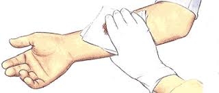

Wounds (severe)
Treatment
Some wounds, such as small cuts or minor scrapes, require only simple first aid measures; others,however, require immediate first aid followed by professional medical treatment.

Before treating any serious incision, abrasion or laceration with extensive bleeding, act quickly to control bleeding. Get professional medical help immediately
Any wound can become contaminated and infected.